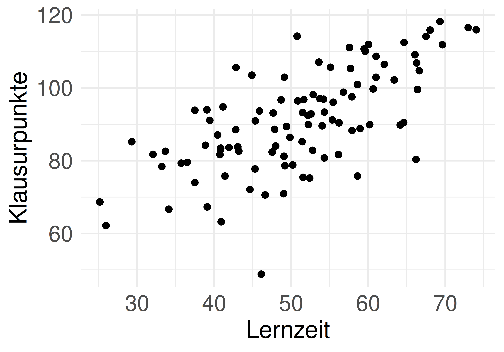
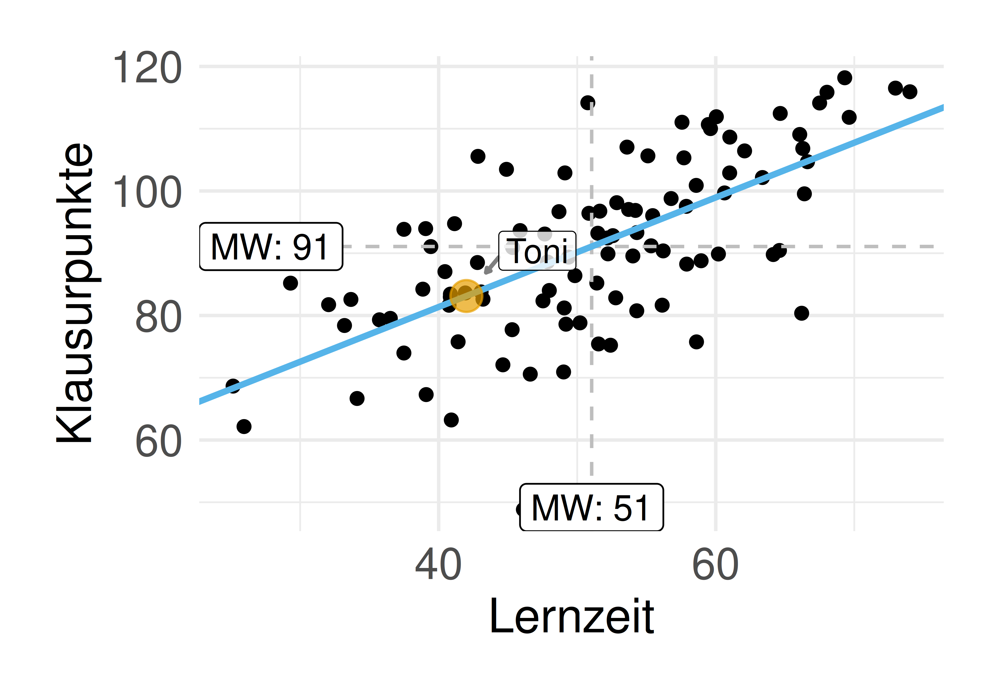
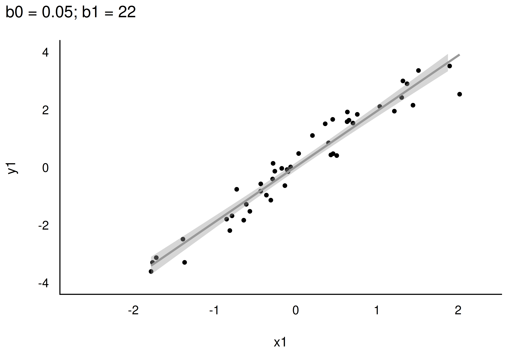
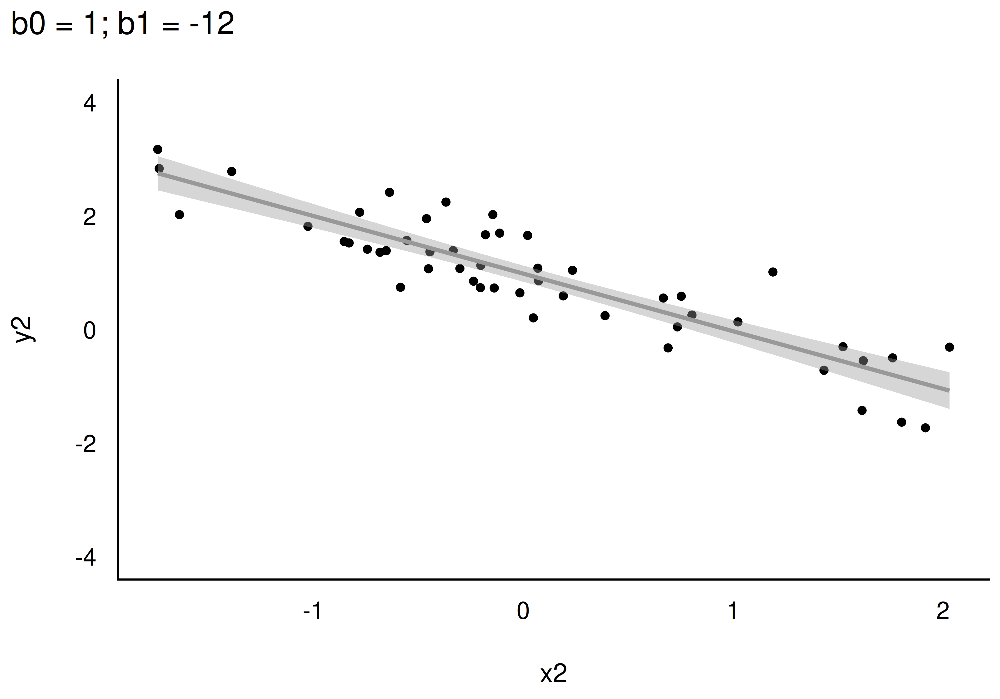
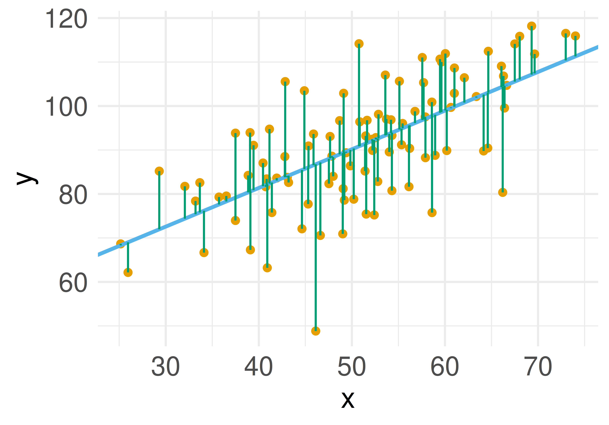
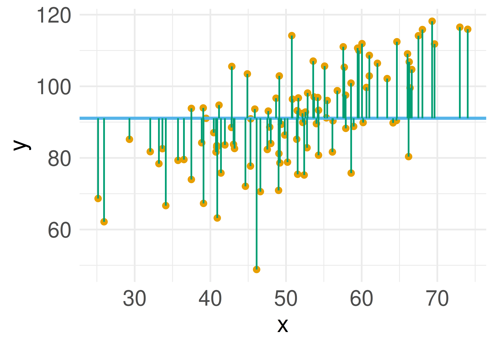
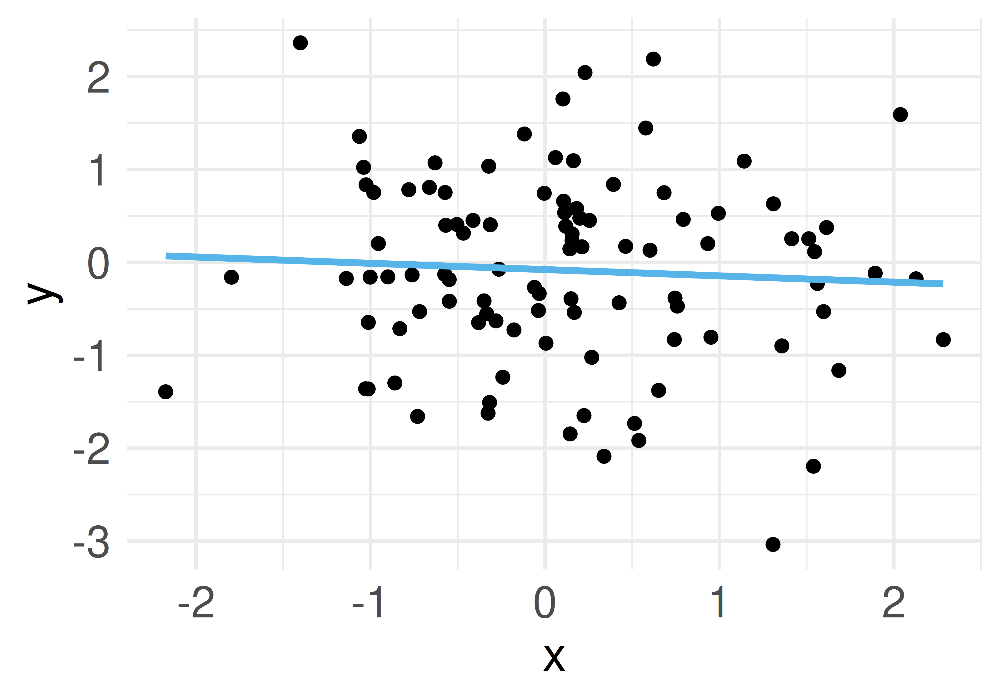
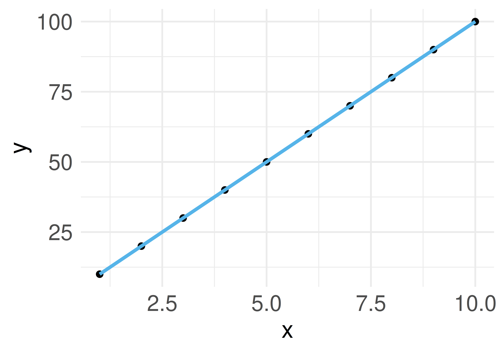

Statistik1
Geradenmodelle 1
Einstieg
Lernziele
- Sie können ein Punktmodell von einem Geradenmodell begrifflich unterscheiden.
- Sie können die Bestandteile eines Geradenmodells aufzählen und erläutern.
- Sie können die Güte eines Geradenmodells anhand von Kennzahlen bestimmen.
- Sie können Geradenmodelle sowie ihre Modellgüte in R berechnen.
Einstieg
Vorhersagen
Was macht eine gute Vorhersage aus?
Vorhersagen sind nützlich, unter (mindestens) folgenden Voraussetzungen:
- Sie sind präzise.
- Wir wissen, wie präzise.
- Jemand interessiert sich für die Vorhersage.
Die Methode des Vorhersagens, die wir hier betrachten, nennt man auch lineare Regression.
Vorhersagen
Vorhersage ohne Prädiktor: Tonis Frage
Toni fragt: “Welche Statistiknote kann ich in der Klausur erwarten?” — ohne weitere Angaben.
Beste Antwort: der Notenschnitt (Mittelwert) der letzten Klausur — wir nutzen den Mittelwert als Punktmodell.
{kind=link}
Vorhersagen
Definition: Nullmodell (Punktmodell)
Definition: Nullmodell (Punktmodell)
Modelle ohne UV, Punktmodelle also, kann man so bezeichnen: y ~ 1. Da das Modell null UV hat, nennt man es auch manchmal Nullmodell.
Auf Errisch: lm(y ~ 1, data = noten2) — der zurückgemeldete Koeffizient (Intercept) ist in diesem Fall der Mittelwert.
Vorhersagen
Toni verrät die Lernzeit
Toni: “Ich hab insgesamt 42 Stunden gelernt.” Der Trend im Streudiagramm ist deutlich zu erkennen: Je mehr Lernzeit, desto mehr Klausurpunkte.


Vorhersagen
Geradenmodelle
Von Punktmodell zu Geradenmodell
Ein Geradenmodell ist eine Verallgemeinerung des Punktmodells: Ein Punktmodell sagt für alle Beobachtungen den gleichen Wert vorher.
In einem Geradenmodell wird nicht mehr (notwendig) für jede Beobachtung die gleiche Vorhersage \(\hat{y}\) gemacht.
Geradenmodelle
Definition: Gerade
Definition: Gerade
Eine Gerade ist das, was man bekommt, wenn man eine lineare Funktion in ein Koordinatensystem einzeichnet. Man kann sie durch zwei Koeffizienten festlegen: Achsenabschnitt (engl. intercept) und Steigung (engl. slope).
Geradenmodelle
Die Geradengleichung
\[ \definecolor{ycol}{RGB}{230,159,0} \definecolor{modelcol}{RGB}{86,180,233} \definecolor{errorcol}{RGB}{0,158,115} \definecolor{beta0col}{RGB}{213,94,0} \definecolor{beta1col}{RGB}{0,114,178} \definecolor{xcol}{RGB}{204,121,167} \]
In der Statistik wird folgende Nomenklatur bevorzugt: \(f(\color{xcol}{x})=\color{ycol}{\hat{y}}=\color{beta0col}{\beta_0} + \color{beta1col}{\beta_1} \color{xcol}{x}\)
Die Nomenklatur mit \(b_0, b_1\) hat den Vorteil, dass man das Modell einfach erweitern kann: \(b_2, b_3, \ldots\). Anstelle von \(b\) liest man auch oft \(\beta\).
Das “Dach” über y, \(\color{modelcol}{\hat{y}}\), drückt aus, dass es sich um den vom Modell vorhergesagten Wert handelt — nicht den tatsächlich beobachteten Wert von \(\color{ycol}{y}\).
Geradenmodelle
Elemente einer Regressionsgeraden
{kind=link}
Geradenmodelle
Definition: Das einfache lineare Modell
Definition: Das einfache lineare Modell
Beschreibt den Wert einer abhängigen metrischen Variablen, \(\color{ycol}{y}\), als lineare Funktion von einer unabhängigen Variablen, \(\color{xcol}{x}\), plus einem Fehlerterm, \(\color{errorcol}{\epsilon}\).
\[\begin{aligned} \color{ycol}{y} &= f(\color{xcol}{x}) + \color{errorcol}{\epsilon} \\ \color{ycol}{y_i} &= \color{beta0col}{\beta_0} + \color{beta1col}{\beta_1} \cdot \color{modelcol}{x_i} + \color{errorcol}{\epsilon_i} \end{aligned}\]
- \(\color{beta0col}{\beta_0}\): geschätzter y-Achsenabschnitt laut Modell (intercept)
- \(\color{beta1col}{\beta_1}\): geschätzte Steigung laut Modell (slope)
- \(\color{errorcol}{\epsilon}\): Fehler des Modells
Geradenmodelle
Verschiedene Daten, verschiedene Geraden


Je nach Datenlage können sich Regressionsgeraden in Steigung oder Achsenabschnitt unterscheiden.
Geradenmodelle
Spezifikation eines Geradenmodells
\[\color{ycol}{\hat{y}} \sim \color{xcol}{\text{x}}\]
Lies: “Laut meinem Modell ist mein vorhergesagtes \(\color{ycol}{\hat{y}}\) irgendeine Funktion von \(\color{xcol}{x}\).” Wir erinnern uns: \(\color{ycol}{AV} \sim \color{xcol}{UV}\).
In Errisch: lm(y ~ x, data = meine_daten). lm steht für “lineares Modell” — die Gerade nennt man auch Regressionsgerade.
Geradenmodelle
Koeffizienten in R berechnen
Die Regressionsgleichung lautet demnach: y_pred = 8.6 + 0.88*x.
8.6 ist der Achsenabschnitt (Wert von \(y\) bei \(x=0\)). 0.88 ist die Steigung: Für jede Stunde Lernzeit steigt der vorhergesagte Klausurerfolg um 0.88 Punkte.
Geradenmodelle
Der Achsenabschnitt
{kind=link}
Geradenmodelle
Vorhersagefehler (Residuum)
Die Differenz zwischen vorhergesagtem Wert und tatsächlichem Wert nennt man Vorhersagefehler (error) oder Residuum:
\[\color{errorcol}{e_i} = \color{ycol}{y_i} - \color{modelcol}{\hat{y}_i}\]
Geradenmodelle
Vorhersagefehler im Vergleich


Beim Geradenmodell (lm_toni) ist die mittlere Absolutabweichung (MAE) deutlich kleiner als beim Nullmodell (lm0) — das Geradenmodell ist viel besser.
Geradenmodelle
Definition: Fehlerstreuung
Definition: Fehlerstreuung
Als Fehlerstreuung bezeichnen wir die Verteilung der Abweichungen der beobachteten Werte (\(y_i\)) vom vorhergesagten Wert (\(\hat{y}_i\)).
Kenngrößen dafür: MAE oder MSE. Ein Geradenmodell ist immer besser als ein Punktmodell, solange X mit Y korreliert ist.
Geradenmodelle
Berechnung der Modellkoeffizienten
Wie legt man die Regressionsgerade in das Streudiagramm? Die Koeffizienten \(\beta_0\) und \(\beta_1\) wählt man so, dass die Residuen minimal sind — genauer: die Summe der quadrierten Residuen wird minimiert.
\[\text{min}\sum_i \color{errorcol}{e_i}^2\]
Geradenmodelle
\(R^2\) als Maß der Modellgüte
R² als Verringerung der Fehlerstreuung
Wir vergleichen die Fehlerstreuung (MSE) des Modells mit der Fehlerstreuung (MSE) des Nullmodells:
\[R^2 = 1 - \frac{\text{MSE}_{m}}{\text{MSE}_{m0}}\]
R² als Maß der Modellgüte
Definition: R-Quadrat
Definition: R-Quadrat
Der Anteil der Verringerung der Fehlerstreuung zwischen lm0 und dem gerade untersuchten Modell nennt man R-Quadrat (\(R^2\)). \(R^2\) ist ein Maß der Modellgüte: Je größer \(R^2\), desto besser die Vorhersage. Wertebereich: 0 bis 1. Im Nullmodell beträgt \(R^2\) per Definition Null. Für Modelle des Typs \(y \sim x\) gilt: \(R^2 = r_{xy}^2\).
R² als Maß der Modellgüte
Extremfälle von R²


Je größer R-Quadrat, desto besser passt das Modell zu den Daten.
R² als Maß der Modellgüte
Interpretation eines Regressionsmodells
Modellgüte
Die Residuen (Vorhersagefehler) bestimmen die Modellgüte: Sind die Residuen im Schnitt groß, ist die Modellgüte gering, und umgekehrt.
Verschiedene Koeffizienten stehen zur Verfügung: \(R^2\), \(r\) (Korrelation von tatsächlichem \(y\) und vorhergesagtem \(\hat{y}\)), MSE, RMSE, MAE, …
Interpretation eines Regressionsmodells
Koeffizienten interpretieren
- Achsenabschnitt (\(\beta_0\)) und Steigung (\(\beta_1\)) sind nur eingeschränkt zu interpretieren, wenn man die zugrundeliegenden kausalen Abhängigkeiten nicht kennt.
- Allein aufgrund eines statistischen Zusammenhangs darf man keine kausalen Abhängigkeiten annehmen.
- Beispiel: Bei einer Regression von Gewicht auf Körpergröße ist der Achsenabschnitt wenig nützlich — es gibt keine Menschen der Größe 0.
Interpretation eines Regressionsmodells
Die Steigung interpretieren
“Im Modell lm_toni beträgt der Regressionskoeffizient \(\beta_1 = 0{,}88\). Zwei Studentinnen, deren Lernzeit sich um eine Stunde unterscheidet, unterscheiden sich laut Modell um den Wert von \(\beta_1\).”
Vorsicht
“Effekt” klingt kausal. Ohne weitere Absicherung darf man Regressionskoeffizienten nicht kausal verstehen — besser: statistischer Effekt.
Interpretation eines Regressionsmodells
Wie man mit Statistik lügt
r vs. R²: eine nichtlineare Beziehung
Der Unterschied in Modellgüte zwischen \(r=.1\) und \(r=.2\) ist viel kleiner als zwischen \(r=.7\) und \(r=.8\) — da \(r = \sqrt{R^2}\), dürfen Unterschiede in \(r\) nicht wie Unterschiede in \(R^2\) interpretiert werden.
{kind=link}
Vorsicht
Unterschiede zwischen Korrelationsdifferenzen dürfen nicht linear interpretiert werden.
Wie man mit Statistik lügt
Fallbeispiel Mariokart
Vorhersage des Verkaufspreises
Ziel: eine genaue Vorhersage der Verkaufspreise (total_pr) von Mariokart-Auktionen.
Oh nein! Unterirdisch schlecht. Anstelle von bloßem Rumprobieren: Welche Variable korreliert am stärksten mit total_pr?
Fallbeispiel Mariokart
Ein besseres Modell: ship_pr
- Achsenabschnitt: erwarteter Verkaufspreis bei 0 Dollar Versandkosten (“Sockelbetrag”).
- Steigung: Anstieg des erwarteten Verkaufspreises pro Dollar Versandkosten.
- Regressionsgleichung:
total_pr_pred = b0 + b1 * ship_pr
Fallbeispiel Mariokart
Fallstudie Immobilienpreise
Ziel: Häuserpreise vorhersagen
In dieser Fallstudie geht es darum, Immobilienpreise vorherzusagen — Datenbasis ist ein Kaggle-Wettbewerb (“House Prices”).
d_train: Trainingsdaten zum Modellbau (enthältSalePrice)d_test: Testdaten, für die der Preis vorhergesagt werden soll
Fallstudie Immobilienpreise
Mehrere Prädiktoren in einem Modell
Das Pluszeichen ist hier kein arithmetischer Operator, sondern bedeutet: “nimm UV1 und UV2 und … als Prädiktoren.”
Fallstudie Immobilienpreise
Modellvergleich per RMSE
lm_immo1: nurOverallQualals Prädiktorlm_immo2:OverallQual + GrLivArea + GarageCarsm0: Nullmodell (nur der Mittelwert)
Ob die Modellgüte “gut” ist, beurteilt man am besten relativ — im Vergleich zu anderen Modellen.
Fallstudie Immobilienpreise
Vom Modell zur eingereichten Prognose
Die Vorhersagen werden mit den Spalten Id und SalePrice als CSV-Datei eingereicht — das allgemeine Muster jeder Prognose auf neuen (unbeobachteten) Daten.
Fallstudie Immobilienpreise
Zusammenfassung
- Ein Geradenmodell verallgemeinert das Punktmodell: \(\hat{y} = \beta_0 + \beta_1 x\)
- Achsenabschnitt (\(\beta_0\)) und Steigung (\(\beta_1\)) legen die Regressionsgerade fest
- Die Koeffizienten werden per Methode der kleinsten Quadrate geschätzt — die Summe der quadrierten Residuen wird minimiert
- R² misst die Verringerung der Fehlerstreuung gegenüber dem Nullmodell (Wertebereich 0–1)
- Regressionskoeffizienten sind ohne zugrundeliegende Theorie nicht kausal interpretierbar
- Mehrere Prädiktoren lassen sich mit
+kombinieren; Modellgüte ist über RMSE/MAE/R² vergleichbar
Literaturhinweise
Referenzen

Statistik1 — Geradenmodelle 1